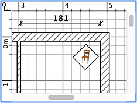
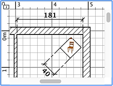

|
Um eine Bema�ung einzuzeichnen, m�ssten Sie zuerst im Men�
Plan > Bema�ungen erstellen oder das Bema�ungen erstellen-Werkzeug
ausw�hlen.
Bema�ungen erstellen-Werkzeug
Sie können neue Bema�ungen im Wohnungsplan auf verschiedenen Wegen erstellen:
-
Klicken Sie auf den Startpunkt einer neuen Bema�ung, klicken Sie auf den Endpunkt,
und klicken Sie ein drittes Mal, nachdem Sie den Mauszeiger bewegt haben, um die
Länge der Erweiterungslinien zu wählen, die am Ende jeder Bema�ungslinie
gezeichnet wird
-
Bewegen Sie den Mauszeiger auf ein Ende eines Mobiliarstücks, einer Wand oder
eines Raumes, dem Sie eine Bema�ung geben wollen, klicken Sie doppelt, um die
temporäre Bemaßung zu akzeptieren, dann klicken Sie ein drittes Mal,
nachdem Sie die Länge der Erweiterungslinien ausgewählt haben.
-
Dr�cken sie die Strg-Taste (oder alt / option-Taste unter macOS) und
klicken Sie auf den Startpunkt, um den
�nderndialog anzuzeigen, der Ihnen erlaubt eine
H�henmessung zu erstellen, die f�r das Objekt in der 3D-Ansicht angezeigt wird.
Die neuen Bemaßungen haben keine Erweiterungslinien, wenn Sie die Maus nicht
zwischen dem zweiten und dritten Klick bewegt haben.
Drücken Sie jederzeit die Escape-Taste, um die Erstellung einer
Bemaßung abzubrechen.
Während Sie den Endpunkt einer Bema�ung wählen, wird jede Mausbewegung eine
Aktualisierung des Wohnungsplanes bzw. der angezeigten Größe und Länge
der Bema�ung hervorrufen.
 |

|
Erstellen einer Bema�ung
ohne Erweiterungslinien
|
Erstellen einer Bema�ung
mit Erweiterungslinien
|
Um das Zeichnen von Bema�ungen zu beenden, w�hlen Sie Plan > Ausw�hlen oder
w�hlen das Ausw�hlen-Werkzeug (oder ein beliebiges anderes Werkzeug).
 Ausw�hlen-Werkzeug Ausw�hlen-Werkzeug
|